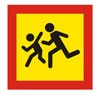

Водитель транспортного средства, приближающегося к нерегулируемому пешеходному переходу, обязан уступить дорогу пешеходам, переходящим дорогу или вступившим на проезжую часть (трамвайные пути) для осуществления перехода.
Если перед нерегулируемым пешеходным переходом остановилось или снизило скорость транспортное средство, то водители других транспортных средств, движущихся в том же направлении, также обязаны остановиться или снизить скорость. Продолжать движение разрешено с учетом требований пункта 14.1 Правил.
На регулируемых пешеходных переходах при включении разрешающего сигнала светофора водитель должен дать возможность пешеходам закончить переход проезжей части (трамвайных путей) данного направления.
Запрещается въезжать на пешеходный переход, если за ним образовался затор, который вынудит водителя остановиться на пешеходном переходе.
Во всех случаях, в том числе и вне пешеходных переходов, водитель обязан пропустить слепых пешеходов, подающих сигнал белой тростью.
Водитель должен уступить дорогу пешеходам, идущим к стоящему в месте остановки маршрутному транспортному средству или от него (со стороны дверей), если посадка и высадка производятся с проезжей части или с посадочной площадки, расположенной на ней.
Приближаясь к остановившемуся транспортному средству с включенной аварийной сигнализацией, имеющему опознавательный знак “Перевозка детей”, водитель должен снизить скорость, при необходимости остановиться и пропустить детей.
